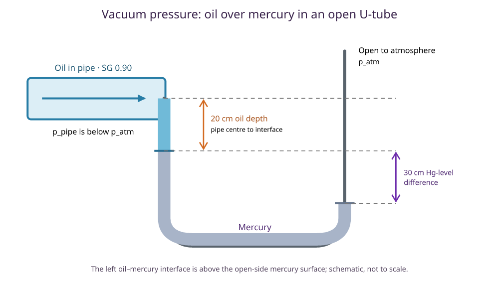
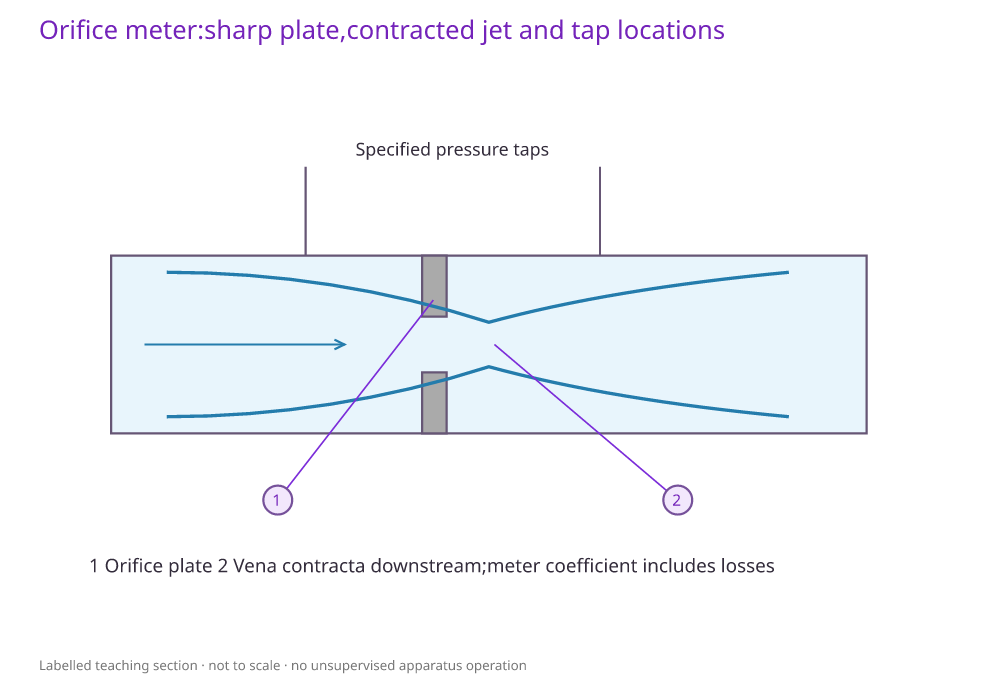
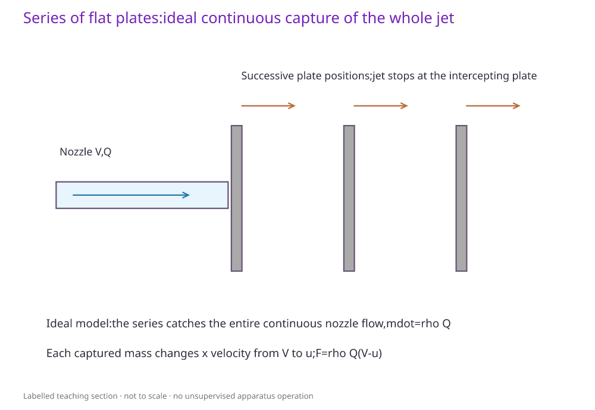
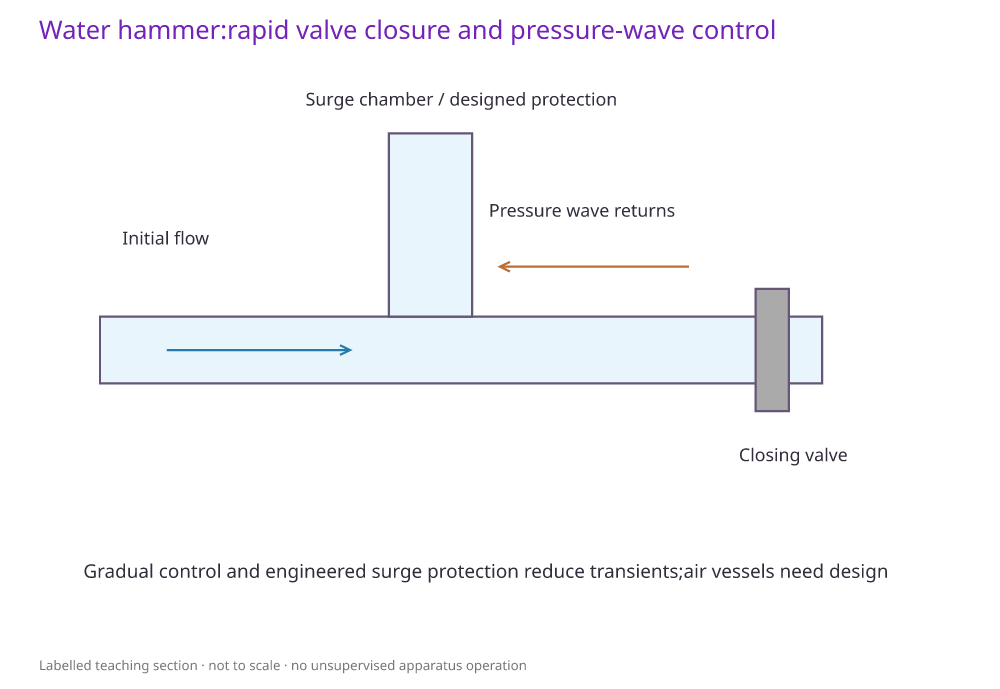
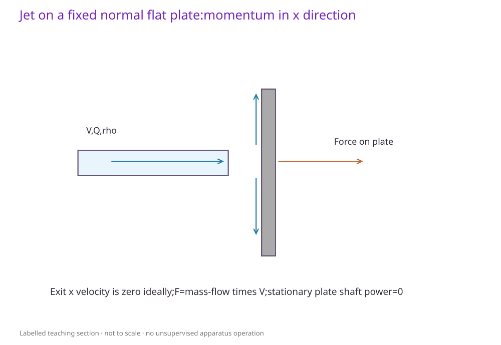
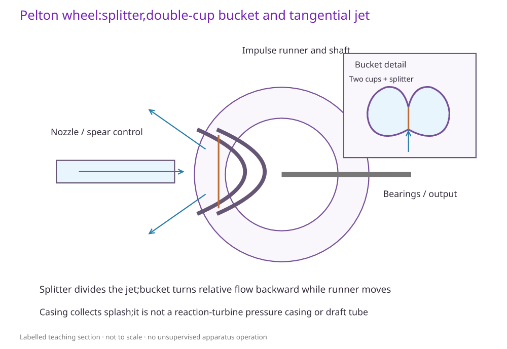
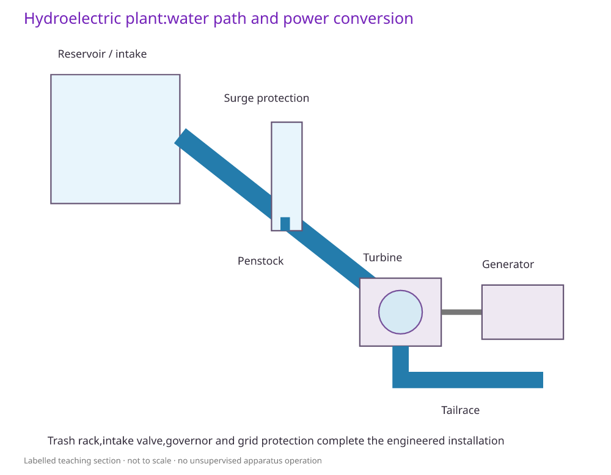
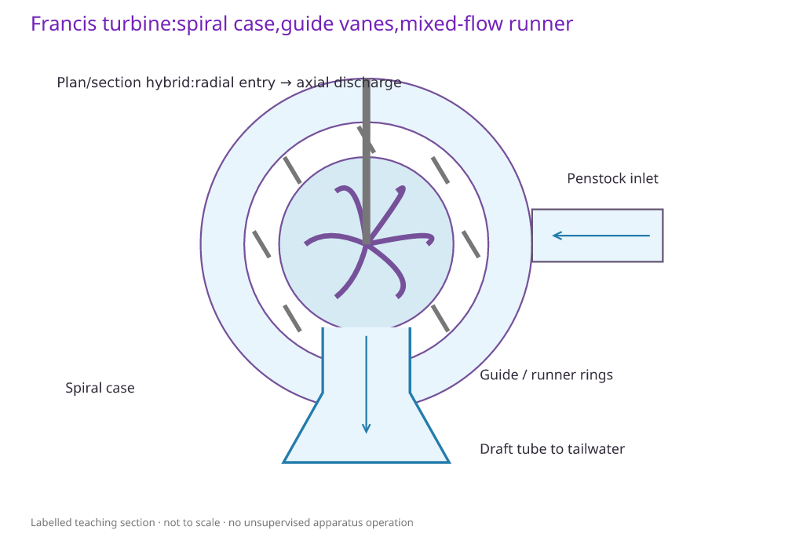
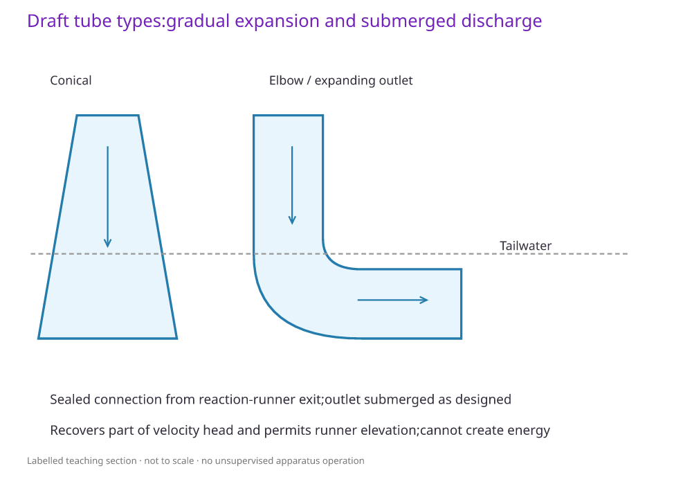
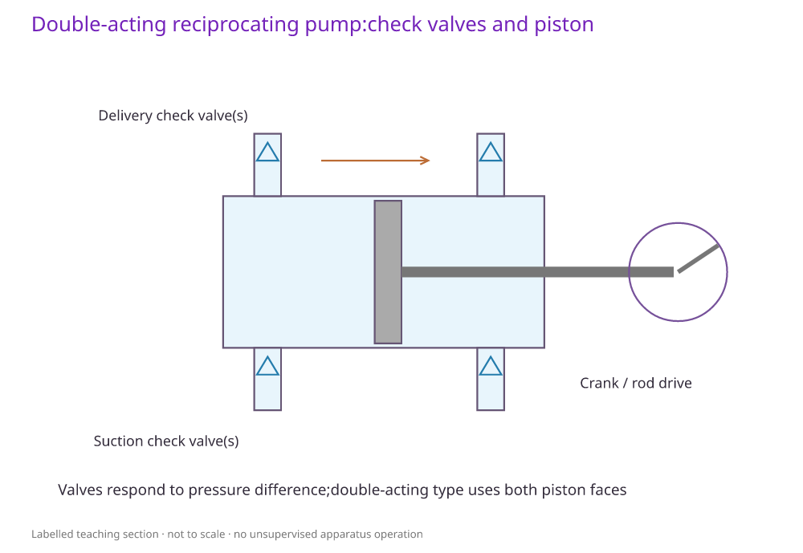

Updated supplied study solution — English only. આ નવો આપેલો ઉકેલ માત્ર અંગ્રેજીમાં છે; ભાષા બદલવાથી જવાબોનું ભાષાંતર થતું નથી. Unofficial model answers, not a GTU marking scheme; answers have not been independently verified.
The original Winter 2025 question PDF was not found in the supplied Drive files. This reader preserves the Winter questions and answers from the combined source HTML; the Summer PDF is not linked to this exam.
Fluid Mechanics and Hydraulic Machinery
All printed question parts and every OR alternative are answered in English. These are explanatory study solutions aligned with the supplied papers and Semester III course notes—not an official GTU marking scheme.
The paper states that the English version is authentic; wording below follows it.
Question 1
Question wording, marks and expandable study solution
Q1(a)Define : Compressibility, Capillarity and Density3 marks
Model answer · 3 marks
- Compressibility, β: fractional decrease of volume per unit pressure rise: β = −(1/V)(dV/dp) = 1/K, where K is bulk modulus. SI unit: Pa⁻¹.
- Capillarity: rise or depression of a liquid in a narrow tube caused by surface tension together with liquid–solid adhesion and liquid cohesion. For a clean circular tube, h = 4σ cosθ/(ρgd).
- Density, ρ: mass per unit volume, ρ = m/V; SI unit kg/m³.
Q1(b)(i) Enlist assumptions of Bernoulli’s equation. (ii) Write the need of priming in centrifugal pump.4 marks
Model answer · 4 marks
(i) Bernoulli assumptions:
- Flow is steady and the fluid is incompressible.
- Viscous losses are negligible (ideal/inviscid flow).
- The equation is applied along a streamline; it applies across streamlines if the flow is irrotational.
- No pump or turbine shaft work, heat transfer, or other energy addition/removal occurs between the sections.
- Velocity is represented by its section mean and kinetic-energy correction is taken as 1.
(ii) Priming: before an ordinary centrifugal pump starts, fill its casing and suction line with liquid and remove trapped air. Air has very low density, so an air-filled impeller cannot establish the pressure difference needed to lift liquid into the suction pipe; priming allows the pump to develop suction and deliver flow. Flooded-suction or purpose-designed self-priming systems are exceptions.

Q1(c)State Pascal’s law of pressure and prove it mathematically.7 marks
Model answer · 7 marks
Statement: a pressure increment applied to a confined fluid at rest is transmitted undiminished throughout the fluid and to the containing walls. Hydrostatic pressure still varies with elevation; Pascal’s law concerns the transmitted increment.
Mathematical proof at a point (pressure isotropy): consider an infinitesimal triangular fluid wedge in static equilibrium. Let the sloping face have area A and make angle θ with the horizontal. Its projected vertical and horizontal face areas are A cosθ and A sinθ. Let the corresponding pressures be pz, px and pn. In the limiting small wedge its weight is negligible compared with pressure forces because weight scales with volume, while pressure force scales with area.
Vertical equilibrium: pz(A cosθ) = pnA cosθ ⇒ pz = pn
Thus pressure at a point is the same in every direction. In a static fluid, p₂ − p₁ = ρg(z₁ − z₂). Adding an imposed pressure increment Δp to one point adds that same increment at every other point, so Δp₂ = Δp₁. For two equal-height hydraulic pistons, F₁/A₁ = F₂/A₂; force multiplication does not multiply energy.

Q1(c) — ORA simple U-tube mercury manometer is used to measure the pressure of oil flowing in a pipe which have Specific gravity of 0.90. The pressure is vacuum pressure. Its right end is open to atmosphere. If the difference of mercury level between both ends is 30 cm and in its left end, the depth of oil from the center of pipe is 20 cm, find vacuum pressure in N/m2.7 marks
Model answer · 7 marks
Pressure walk and assumption: because the pipe pressure is below atmospheric, take the mercury interface in the left limb to be 0.30 m higher than the open right-limb mercury surface. The pipe centre is 0.20 m above the left interface. Let ρw = 1000 kg/m³, SGHg = 13.6, SGoil = 0.90 and g = 9.81 m/s².
Moving up 0.20 m of oil to the pipe centre:
ppipe = pL − ρoilg(0.20)
Vacuum pressure = patm − ppipe
= ρwg[13.6(0.30) + 0.90(0.20)]
= 1000(9.81)(4.26) = 41,790.6 N/m² ≈ 41.79 kPa vacuum
The answer is a pressure difference below atmosphere; atmospheric pressure is not needed to report the vacuum magnitude.

Question 2
Question wording, marks and expandable study solution
Q2(a)Find gauge pressure and absolute pressure at a depth 1.5 m from the free surface of water. Take atmospheric pressure as 101 kN/m2.3 marks
Model answer · 3 marks
Assume water density ρ = 1000 kg/m³ and g = 9.81 m/s².
Absolute pressure pabs = patm + pg
= 101,000 + 14,715 = 115,715 Pa = 115.715 kPa
Gauge pressure is measured above local atmosphere; absolute pressure is measured from vacuum.
Q2(b)With neat sketch explain working of a Venturimeter.4 marks
Model answer · 4 marks
A Venturimeter measures discharge in a full pipe using the pressure fall produced by a smooth contraction.
- Construction: a converging inlet leads from pipe area A₁ to a short throat of area A₂; a gradual diffuser returns toward pipe size. Pressure taps at inlet and throat connect to a differential manometer or transducer.
- At steady flow, continuity gives A₁V₁ = A₂V₂ for an incompressible liquid, so velocity increases in the throat.
- Bernoulli’s equation then predicts lower static pressure at the throat; the pressure difference is read and converted to flowing-fluid head.
- Use the calibrated discharge coefficient Cd to account for real losses:
It is accurate with comparatively low permanent head loss, but larger and more costly than an orifice meter.

Q2(c)The difference of heads between two ends of a pipe of 250 m length and 30 cm diameter is 1.5 m. Neglecting minor losses and taking Darcy’s co-efficient as 0.01, Calculate discharge in lit/sec through pipe.7 marks
Model answer · 7 marks
Take the printed Darcy coefficient as the Darcy–Weisbach friction factor fD, as defined in the supplied course notes, and the full head difference as friction head hf.
V = √[2ghfD/(fDL)]
= √[2(9.81)(1.5)(0.30)/(0.01×250)] = 1.8793 m/s
A = πD²/4 = π(0.30)²/4 = 0.070686 m²
Q = AV = 0.070686(1.8793) = 0.13284 m³/s
= 132.84 L/s
Minor losses are excluded as instructed. If a different text uses its given coefficient as the Fanning factor fF, use 4fF in the Darcy equation; the convention must not be mixed.
Assumption / convention: Friction-factor convention: 0.01 is interpreted as Darcy fD, consistent with the course notes.
Q2(a) — ORThe weight of 1 litre oil is 9.6 N. Calculate its specific weight and density.3 marks
Model answer · 3 marks
Volume = 1 L = 0.001 m³.
Density ρ = γ/g = 9600/9.81 = 978.59 kg/m³ ≈ 978.6 kg/m³
Specific weight is force per volume; density is mass per volume.
Q2(b) — ORExplain Orifice meter with neat sketch.4 marks
Model answer · 4 marks
An Orifice meter is a compact differential-pressure flow meter consisting of a thin, sharp-edged plate with a known opening fitted across a pipe.
- Upstream and downstream pressure taps connect to a manometer or pressure transducer.
- As liquid contracts through the opening and vena contracta, its velocity rises and static pressure falls.
- The measured pressure/head difference is related to discharge by continuity and Bernoulli’s equation.
- Apply the calibrated discharge coefficient to include contraction and losses; the downstream pressure partly recovers but permanent loss is appreciable.
It is inexpensive and easy to replace, but is more sensitive to edge condition and generally loses more head than a Venturimeter.

Q2(c) — ORWater flows through a pipe, the diameter of which changes gradually from 30 cm at point A to 40 cm at point B. The point A is 300 cm and point B is 700 cm above datum. The flow rate is 42 m3/min. Find the pressure at point B in N/m2, if the pressure at A is 50 KN/m2.7 marks
Model answer · 7 marks
Assumptions: steady incompressible water flow; no loss or shaft work is specified, so use ideal Bernoulli between A and B. Treat the stated pressure as the same reference at both points.
AA = π(0.30)²/4 = 0.070686 m²; VA = Q/AA = 9.9030 m/s
AB = π(0.40)²/4 = 0.125664 m²; VB = Q/AB = 5.5704 m/s
zA = 3 m; zB = 7 m
pB = 50,000 + 1000(9.81)(3−7) + ½(1000)(9.9030²−5.5704²)
= 44,279.6 N/m² ≈ 44.28 kN/m²
If the stated 50 kN/m² is gauge pressure, this result is gauge pressure too.

Question 3
Question wording, marks and expandable study solution
Q3(a)Define: Stream line, Path line and Stream tube3 marks
Model answer · 3 marks
- Streamline: at a specified instant, a curve everywhere tangent to the local velocity vector. No fluid crosses a streamline at that instant.
- Pathline: the actual trajectory followed by one identified fluid particle over time.
- Stream tube: a tube-like control surface bounded by streamlines; its sides are impermeable to instantaneous cross-flow. In steady flow, streamline and pathline coincide.
Q3(b)Describe Reynold’s experiment with neat sketch.4 marks
Model answer · 4 marks
Apparatus: a constant-level water tank, smooth transparent test pipe of known diameter, dye reservoir with fine injector, downstream flow-control valve, and a flow-measuring tank or meter.
- Establish a gentle, steady flow through the transparent tube.
- Introduce a thin dye filament at the pipe inlet without disturbing the water.
- At low velocity the filament remains nearly straight and distinct: flow is laminar.
- Increase flow gradually: the filament begins to oscillate and then mixes across the pipe, indicating transition and turbulent flow.
- Measure discharge Q; calculate mean V = Q/A and Reynolds number Re = ρVD/μ = VD/ν. For a circular pipe, Re below about 2300 is commonly laminar, about 2300–4000 transitional, and above about 4000 commonly turbulent; disturbances affect the boundaries.

Q3(c)Derive equation of force, work done and efficiency due to impact of jet on series of moving flat plate.7 marks
Model answer · 7 marks
Let a water jet of area a and absolute velocity V strike a continuous series of flat plates moving in the jet direction at speed u (0 ≤ u < V). Assume the series intercepts the complete jet, the fluid leaves the plate with axial absolute velocity u, and losses outside the plate interaction are neglected.
- Because successive plates catch the whole jet, mass flow through the series is ṁ = ρaV.
- Inlet and outlet axial velocities are V and u. By momentum change, force on the plates is:
- Work rate (power) delivered to the moving plates is force times plate speed:
Work in time t: W = Pt
- Jet kinetic-energy rate at the nozzle is Pjet = ½ρaV³. Therefore the efficiency based on the whole jet is:
Let x = u/V. Then η = 2x(1−x); dη/dx = 2−4x = 0 gives x = ½. Thus optimum plate speed u = V/2 and maximum efficiency ηmax = 0.50 = 50%. A series plate differs from one isolated plate because it captures all of the jet mass flow.

Q3(a) — ORDefine: Co-efficient of contraction, Co-efficient of discharge, Co-efficient of velocity3 marks
Model answer · 3 marks
- Coefficient of contraction, Cc: area of the jet at vena contracta divided by orifice area: Cc = Ac/Ao.
- Coefficient of velocity, Cv: actual jet velocity at vena contracta divided by ideal Torricelli velocity: Cv = Vactual/√(2gH).
- Coefficient of discharge, Cd: actual discharge divided by ideal discharge based on orifice area: Cd = Qactual/[Ao√(2gH)].
For a sharp-edged orifice with the same head reference, Cd = CcCv.

Q3(b) — ORWrite short note on “Water hammer”.4 marks
Model answer · 4 marks
Water hammer is a transient pressure wave produced when flow velocity in a liquid-filled pipe changes rapidly. Rapid valve closure/opening, pump trip or check-valve slam can produce high or low pressure surges.
- It results from liquid compressibility and elastic expansion of the pipe; wave speed c depends on both.
- For a rapid velocity change, the ideal Joukowsky relation is Δp = ρcΔV; an abrupt arrest can therefore create a large surge.
- Effects include noise, vibration, pipe/support loads, leakage, rupture or column separation followed by impact.
- Control by suitable valve-closing time, surge tank or air vessel, pressure-relief/surge devices, proper check valves and rated pipe supports. Design must consider the full transient, not just steady head.

Q3(c) — ORDerive equation of force, work done and efficiency due to impact of jet on a flat vertical moving plate.7 marks
Model answer · 7 marks
Let a jet of area a and speed V strike a single flat plate moving away in the jet direction at speed u, with 0 ≤ u < V. Assume the jet is completely intercepted across the plate, the water leaves with axial absolute velocity u, and density is ρ.
- The jet meets the moving plate at relative speed V−u, so the intercepted mass rate is ṁ = ρa(V−u).
- The axial velocity change of this intercepted water is V−u. Thus:
- Work rate delivered to the plate is:
Work in time t: W = Pt
- Using the full nozzle jet power Pjet = ½ρaV³, the conventional overall jet efficiency is:
With x = u/V, η = 2x(1−x)²; dη/dx = 2(1−x)(1−3x), so maximum overall jet efficiency occurs at u = V/3 and equals 8/27 = 29.63%. If efficiency is instead defined only on the kinetic-energy rate of the mass already intercepted, ηintercepted = 2u(V−u)/V², whose maximum is 50% at u = V/2. State the chosen energy basis.

Question 4
Question wording, marks and expandable study solution
Q4(a)Differentiate: Steady flow and Unsteady flow3 marks
Model answer · 3 marks
| Steady flow | Unsteady flow |
|---|---|
| At a fixed point, fluid properties (such as velocity, pressure and density) do not change with time: ∂()/∂t = 0. | At a fixed point, one or more fluid properties change with time: ∂()/∂t ≠ 0. |
| Mass flow at a section remains constant with time, though it can vary from section to section in a spatially varying field. | Mass stored in a control volume can change with time; instantaneous readings vary. |
| Example: established flow in a pipe supplied at constant conditions. | Example: draining tank, pump start-up or a water-hammer transient. |
Steady is a time classification; it does not necessarily mean uniform in space.
Q4(b)A jet of water, 3 cm diameter, strikes a flat plate in normal direction with a velocity of 35 m/s. Find the force exerted by jet if (i) the plate is stationary (ii) the plate moves with velocity 15 m/s in the direction of jet.4 marks
Model answer · 4 marks
Take ρ = 1000 kg/m³, jet area a = πd²/4 = π(0.03)²/4 = 0.00070686 m². The jet is turned sideways at a flat plate.
= 1000(0.00070686)(35²) = 865.9 N
F = ρa(V−u)² = 1000(0.00070686)(20²) = 282.7 N
For the moving plate, only the relative stream rate reaches this single plate; do not use the full nozzle mass rate.

Q4(c)Explain construction and working of Centrifugal pump with neat sketch.7 marks
Model answer · 7 marks
Construction: an impeller with curved vanes is mounted on a rotating shaft inside a volute or diffuser casing. The impeller eye connects to the suction pipe; the delivery opening connects to the delivery pipe. A foot valve/strainer may be fitted at the suction inlet to retain liquid and exclude debris. Bearings, seals, base and prime mover support the unit.
Working:
- Prime the casing and suction pipe where the installation is not flooded-suction/self-priming.
- Start the impeller under the approved procedure; liquid is thrown radially outward by the rotating vanes.
- Pressure near the eye falls, so atmospheric/reservoir pressure drives more liquid through the suction pipe into the impeller.
- Liquid gains velocity and pressure while moving through the impeller; the casing collects the flow and converts part of velocity head to pressure head.
- Pressurised liquid leaves through the delivery pipe. The process continues while speed, suction conditions and delivery system permit.
The impeller supplies energy to the fluid. Avoid running dry; cavitation, air leakage and inadequate net positive suction head reduce performance and can damage the pump.
Q4(a) — ORDifferentiate: Laminar flow and Turbulent flow3 marks
Model answer · 3 marks
| Laminar flow | Turbulent flow |
|---|---|
| Fluid moves in orderly layers with little cross-mixing; velocity at a point is comparatively smooth. | Velocity fluctuates irregularly and eddies mix momentum across the flow. |
| In a circular pipe, Re is commonly below about 2300; profile is parabolic for fully developed flow. | In a circular pipe, Re is commonly above about 4000; transitional conditions occur in between. |
| Viscous effects dominate; friction relation differs from the turbulent roughness-dependent case. | Inertial effects and mixing are prominent; friction depends on Reynolds number and relative roughness. |
These Reynolds limits are approximate and depend on disturbances and inlet conditions.
Q4(b) — ORA jet of water having diameter 40 mm, strikes a series of flat plate in a normal direction which are mounted on a wheel with a velocity of 20 m/s. Find force and work done due to impact of jet on plate, if the series of flat plate moves with a velocity of 6 m/s in the direction of jet.4 marks
Model answer · 4 marks
Assume the series catches the whole jet. For water ρ = 1000 kg/m³, a = π(0.04)²/4 = 0.00125664 m² and Q = aV = 0.0251327 m³/s.
F = ṁ(V−u) = 25.1327(20−6) = 351.86 N
Power / work rate = Fu = 351.86(6) = 2111.2 W ≈ 2.111 kW
Work in one second = 2.111 kJ
A series of plates intercepts the full jet mass rate; a single moving plate would use ṁ = ρa(V−u).
Q4(c) — ORExplain construction and working of Pelton wheel turbine with neat sketch.7 marks
Model answer · 7 marks
A Pelton wheel is an impulse turbine suited to high head and comparatively low discharge. Its runner operates in a ventilated casing at approximately atmospheric pressure.
Construction: penstock and nozzle; spear/needle or deflector to regulate jet; runner disc on shaft; double-cup buckets with a central splitter around the rim; bearings, casing and free-discharge tailrace.
Working:
- Net head is converted to a high-speed jet by the nozzle.
- The jet strikes each bucket tangentially at its splitter and divides into two streams.
- Curved bucket surfaces turn the relative flow nearly backward, reducing its tangential momentum.
- The change in water momentum exerts tangential force and torque on the runner.
- The runner shaft transmits mechanical power to the generator; spent water leaves freely through the casing.
- A spear/deflector controls flow and load response; suitable governing limits water-hammer risk in the penstock.
There is no draft tube on a Pelton turbine. Bucket outlet angle, speed ratio, head and losses determine actual efficiency.

Question 5
Question wording, marks and expandable study solution
Q5(a)State the purpose of air vessel in reciprocating pump.3 marks
Model answer · 3 marks
An air vessel is a pressure-rated chamber near the pump cylinder (on the suction and/or delivery line) with a compressible air cushion above the liquid. It:
- stores liquid when instantaneous piston delivery exceeds the line-average flow and returns it when delivery falls;
- smooths pulsating discharge and makes pipeline velocity more uniform;
- reduces acceleration head and friction loss in the long suction/delivery pipes, and can reduce required work and separation risk.
It buffers flow; it does not create energy or make operation beyond the pump’s rated conditions safe.

Q5(b)Draw a line diagram of a hydro-electric power plant and label its main parts.4 marks
Model answer · 4 marks
A typical layout, from upstream to downstream, is:
- Reservoir and dam: store water and create gross head.
- Trash rack and intake gate: screen debris and control entry.
- Headrace/forebay: convey and regulate water before the pressure conduit.
- Surge tank: moderates pressure transients where provided.
- Penstock: carries pressurised water to the turbine.
- Powerhouse: contains turbine, shaft, generator and controls.
- Draft tube (reaction turbine) and tailrace: recover part of outlet velocity head and return water downstream.
The generator output is connected to a transformer and electrical grid; label these if included in the line diagram.

Q5(c)Select the turbine from following data. Discharge – 1500 lit/sec Head – 80 m Efficiency – 80 % Speed – 1500 RPM7 marks
Model answer · 7 marks
Assume the stated efficiency is overall turbine efficiency and, because no waterway losses are supplied, treat the stated head as net head. Use the course metric turbine specific-speed convention, with power in kW, head in m and speed in rpm.
Water power = ρgQH = 1000(9.81)(1.5)(80) = 1177.2 kW
Output power P = ηρgQH = 0.80(1177.2) = 941.76 kW
Ns = N√P/H5/4
= 1500√941.76/801.25 = 192.4 (metric convention)
This intermediate specific speed and 80 m head indicate a Francis (reaction, mixed-flow) turbine. Pelton is normally chosen for much higher head/lower specific speed; Kaplan/propeller for low head and high discharge. Exact limits overlap and final selection uses manufacturer curves and cavitation setting.

Q5(a) — ORExplain terms: (i) Positive displacement pump (ii) Rotodynamic pump3 marks
Model answer · 3 marks
- Positive-displacement pump: traps a finite liquid volume and forces it from inlet to outlet each cycle or revolution. Examples: reciprocating piston/plunger and rotary gear pumps. It is suited to controlled flow/high pressure; relief protection is important because a blocked discharge can create excessive pressure.
- Rotodynamic pump: a rotating impeller continuously transfers energy to flowing liquid, raising velocity and pressure. Examples: centrifugal, mixed-flow and axial-flow pumps. Discharge depends on the pump/system operating point; priming or flooded suction may be required.
Q5(b) — ORWrite short note on draft tube.4 marks
Model answer · 4 marks
A draft tube is a sealed, gradually expanding diffuser between the runner outlet of a reaction turbine and the tailrace.
- Its increasing area reduces mean outlet velocity and converts part of the velocity head into pressure head.
- It permits the runner to be set above tailwater while maintaining a continuous water column and recovering some outlet energy.
- Types include straight conical, simple elbow, elbow with varying cross-section and bell-mouthed/hydra-cone forms.
- It must be designed to avoid excessive separation, loss, air entry and cavitation; recovery is less than ideal because losses remain.
Pelton is an impulse turbine discharging to atmosphere and does not use a draft tube.

Q5(c) — ORThe diameter of piston and stroke length of double acting reciprocating pump is 18 cm and 36 cm respectively. The pump raises water from sump level to 25 m height. The pump efficiency is 80%. The pump actual power is 7.620 kW. Calculate the speed of pump.7 marks
Model answer · 7 marks
Assumptions: “actual power” is shaft input; the stated 80% is overall efficiency. No slip/volumetric efficiency or piston-rod diameter is given, so take volumetric efficiency as 100% and neglect rod-area correction.
Actual discharge Q = Pw/(ρgH)
= 6096/[1000(9.81)(25)] = 0.024856 m³/s
Piston area A = πD²/4 = π(0.18)²/4 = 0.025447 m²
For an ideal double-acting pump, theoretical discharge Q = 2ALN/60, where L = 0.36 m and N is rpm.
= 60(0.024856)/[2(0.025447)(0.36)]
= 81.40 rpm ≈ 81 rpm
If slip or rod area is significant, the corresponding volumetric efficiency/rod dimensions are required to refine the speed.
Assumption / convention: Speed uses the stated overall efficiency and the explicit no-slip, no-rod-area assumptions because those data are not supplied.
